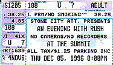

|
December 5, 1996 The Summit. Houston, TX
 The Houston Press December 5, 1996
RUSH TO JUDGMENT Sanctimonious intent and senseless experimentation are the lethal ingredients in some of rock's deadliest moments, and at one time or another, Rush has epitomized both. Few acts have provoked more delight and more disgust, more admiration and more irritation, more euphoria and more nausea, than this durable Canadian power trio. The group has practically swaddled itself in contradictions, weaving them into an armor seemingly designed to deter critics' lashings and anything else that might throw the group's middlebrow karma out of whack. Lately, though, the data indicates that it may be safe for the ultimate thinking headbanger's act to ditch its martyr's shroud. Twenty-two years into its career, the band has sold more than 35 million copies of 20 releases, a dense catalog that includes 16 trips to the studio, three live CDs and one best-of collection. It continues to fill stadiums worldwide, proving that Rush is one of the moist endurable live acts around. The group found its first fans on the road, and the stage still provides the most effective make-or-break introduction to its music. Make it through three hours of Rush's union of art-rock pretention, busy guitar work and abrupt time changes played dutifully, loudly and precisely, and you should know full well where you stand on your way out. At a time when the group may be past its creative prime, new Rush releases consistently inch up the rock charts, often with little help from radio. Young, adventurous bands such as Primus and Soundgarden proudly sing Rush's praises. Even critics once appalled by the band's music, and even more appalled by its success, have started to find the occasional good thing to say about Rush. What gives? Could it be that the rest of the world is finally figuring out what millions of Rush fans have known all along? Anything's possible, but more than likely what we're witnessing involves a phenomenon significantly less dramatic: patience. "We had to wait [this] long for [a] generation to come around and understand us," says Rush drummer Neil Peart. "Because certainly the [music] writers in the '70s didn't understand what we were trying to do." It's easy to come away from a conversation with Peart thinking that he, guitarist Alex Lifeson and bassist Geddy Lee actually get off on the critical abude they've suffered -- that it has only heightened their resolve and bound them more tightly together. After all, if Rush's existence hinged on the approval of anyone but itself and its fans, it might not have made it past 1976's sci-fi rock opera 2112, a release that resisted harsh -- and justifiable -- pummeling by rock's arbiters of taste (though it has since gone platinum, proving once again that critics mainly influence other critics). Rather than buckle under to the name-calling, Rush moved forward, negotiating its way through the late '70s with another pair of numbing doodle-metal epics whose fairyland titles, A Farewell to Kings and Hemispheres, pretty much say it all. "We are experimental, so there have been tangents," says Peart. "I can look at an older song and say, 'That was an interesting tangent that was like a dead-end canyon.' But I don't regret any of our excesses." Rush's most refined tangent -- its stint as a synth-inclined, radio-friendly pop band -- began with 1980's Permanent Waves, home to the AOR staple "The Spirit of Radio," and culminated with 1985's Power Windows, arguably the band's most consistent and least windy work. But again, if Rush had listened to writers such as myself and ended on a high note in 1986, it wouldn't be on the road right now supporting its 20th release, Test for Echo, an impeccably produced, guitar-heavy affair good for at least four or five decent moments. "We're not trying to write for an imaginary audience or some lowest common denominator," says Peart. "We write for people like us. And there are a lot of them out there."
Even with the current moratorium on Rush bashing, one can assume that most journalists inclined to devote more than a few sentences to the band are A) serious fans or B) had once been serious fans. I admit to a mix of A and B; I've been a Rush Ranger for 16 years now, though of late my enthusiasm for the band has fluctuated from release to release. I inform Peart that I've been questioning my faith, and he lets go the sigh of a person who's heard it all before. "Fandom is a very fickle enterprise," he explains. "We have to win [our fans] every time. We never take for granted that we're going to put out a record and people are going to buy it; we never take for granted that we're going to go on tour and people are going to come. It makes us insecure, but that's okay, we shouldn't be secure. If we fuck up, people won't love us." My love affair with Rush began -- and to an extent ended -- with Neil Peart. His dizzying drum aerobics on early '80s releases such as Moving Pictures and Signals blew my impressionable young mind -- as they had many a teenage timekeeper since. At the time, a prized sketch of Peart girdled by his drums hung in my bedroom as inspiration, though it didn't much help my technique. Try as I might, I couldn't survive the exhausting workout that is "Spirit of Radio" without a break. Keeping pace with my prog-rock inspiration was a humbling experience, so I gave up trying and focused my playing on more reasonable goals -- like, say, "Brown Sugar." As I got older, my enthusiasm for Rush waned in proportion to my decreasing respect for Peart's drumming, which, to my mind, was becoming less interesting. I'd discovered the Clash, the Pretenders, Elvis Costello and Squeeze, and was getting into drummers with whom I could actually play along without cramping up. They were human; Peart was superhuman, and therefore no longer worthy of my attention. But Peart makes no apologies to anyone for his abstrusities. "It's very facile to say that less is more," he says. "I don't believe that in drumming, and I don't believe that in words either. If you are going to use something simple it has to be excellently chosen. I would never be happy playing mindless rock beats. But I'll always find ways to imply that if it's what is needed." After a short defection, I was lured back to Rush for a time during college. The mother ship has a way of keeping a leash on Rangers who stray. It does so by sabotaging their pleasure centers with a remarkable chord progression, a monster chorus or a wordy lyric that's, nevertheless, hard to shake, thus, finessing them -- okay, us -- back into the fold. "People have grown up with us as we've grown up. People have dropped in and out along the way, but some stay with us," Peart says. "It's all been earned."
Aside from his duties as drummer, Peart writes Rush's lyrics. He has since 1974, when he was hired to replace the group's first drummer, John Rutsey, whose "mindless rock beats" couldn't be molded to accommodate the band's increasingly intricate ideas. Peart became the band's lyricist by default, after the rest of the band expressed their distaste for the job. "I'm only a lyricist for maybe a month every three years," he says. "But still, it becomes another profession of collecting the stuff, refining the craft and keeping lists of phrases, bits of conversation and possible song titles." Peart's fussed-over prose has been a primary rallying point for Rush haters over the years -- second only, perhaps, to Geddy Lee's Pavarotti-chipmunk wail, which, in its highest late '79s register, was pegged quite accurately as a cross between Robert Plant and Donald Duck (he's since toned down the histrionics). In Peart's world, Tom Sawyer walks the 20th-century landscape as a tough-as-nails warrior, Egypt enjoys half a CD's stay in outer space and a forest is up in limbs when the maple trees pit themselves against oaks in a battle over sunshine rights -- all of which would seem pretty silly if Peart's tone wasn't so stone-faced sincere most of the time. Rush has a healthy sense of humor, often opening its shows with clips from classic cartoons and Three Stooges episodes, but you'd be hard-pressed to find much of it in Peart's lyrics. For the group's latest CD, Test for Echo, Peart sequestered himself in room at Chalet Studio, a country retreat outside of Toronto, for days, churning out lyrics to such dandies as "Driven" ("Driven to the margin of error / Driven to the edge of control / Driven to the margin of terror / Driven to the edge of a deep, dark hole") and "Virtuality" ("I'm a castaway, stranded in a desolate land / I can see the footprints in the virtual sand"). "I think I've gotten better at [writing] over the years," Peart says. "There is still plenty of metaphysics woven in there and lots of abstract metaphors. All of that stuff is there, but I've learned better to write on multiple levels, where it can be perceived as a simple statement if you want to take it that way." Peart put away his notes during Rush's year-and-a-half hiatus after the 1994 tour for Test for Echo's predecessor, Counterparts. During that period, while Lifeson recorded a solo release (Victor) and Lee spent time with his baby girl, Peart produced a tribute to big band legend Buddy Rich (Burning for Buddy) and retooled his technique behind the drum set. "I completely restructured my whole approach to the instrument, really ... holding the sticks differently, hitting differently and sitting differently," says Peart. "I even postponed the recording of this album so that I'd have a full year to let these things come to maturity." Longtime Peart enthusiasts, however, needn't concern themselves with any adverse side effects. "It's very subtle; the listener probably won't notice it," he says. "Even our co-producer at the time commented that it still sounds like me." Peart was forced to waste part of his break from Rush on a less constructive project -- trying to quell gossip that he was terminally ill. "I almost hate to dignify rumors by addressing them," he says, "but it was just a whole bunch of bullshit people dreamed up. People were phoning my parents and asking, 'Is it true he's dying of cancer?' What if it were true? It gets so uncivilized when you think about the realities of it. People always forget that there are real people involved." Guess it comes with the territory. When a band is moving along as smoothly as Rush has for the last two decades without the help of hype, it seems there's always someone around to toss a little friction into the equation. Still, there's no denying Rush's increased hip quotient. Whether the newfound tolerance -- and, in some cases, respect -- has come as a result of the group simply hanging in there long enough to earn it, whether the band's music has actually improved with age or whether its detractors have simply run out of nasty, one-off dismissals that look good in print is grounds for the sort of debate that Peart could not care less about. Besides, he says, Rush still has a way to go with some rock institutions. "Geddy told me an interesting thing the other day -- that when he was doing a small Q&A session for Rolling Stone, the writer let slip that we are their readers' number one most requested group for them to do a full story on," Peart says. "But they won't because of who they are and who we are. That's a trip, if you ask me." "We're just not cool enough for them. But that's okay, because they're not cool enough for us." Accompanying the article is a photo with the caption "Twenty-two years of performing, 35 million albums sold -- why should Rush care what some weeny critics think?"
The Daily Cougar, Univ. of Houston
Rush thanks fans for loyalty with three-hour show Being a Rush fan is kind of like being a 24-year-old who still wears Star Wars Underoos. You take a lot of abuse from non-fans, and every now and then, you wonder if you've outgrown them. Thursday night at the Summit, Rush paid homage to those of us who still listen with a three-hour show full of lights, wonder and songs so long they've not been played in concert in years. The concert to promote the band's 16th studio album Test For Echo was part retrospective and part promotion, but it was mostly a thank you. Nearly 20 years ago, Rush had a breakthrough with the 20-minute opus 2112. This soaring space-opera about repression and individuality was too long for radio and often too long for concerts, but Thursday, fans listened to find the beauty and the anger of the piece still intact. Another highlight from the first half was drummer Neil Peart's 10-minute drum solo in the instrumental "Limbo." Peart is arguably the most envied drummer in rock, and his performance to a sold-out crowd showed why. Although they've been on the road for three months of nonstop shows, the Canadian power trio seemed light-spirited. Geddy Lee and guitarist Alex Lifeson showed off their surfing skills during an impromptu cover of "Wipeout," and any time the two had competing solos, they actively tried to upstage each other. Lifeson was the stage clown as always. He had the crowd in his hand, and he knew it. During some of the tougher guitar parts, his quirky smile seemed to ask, "You think this is hard? I've been doing this since you were in diapers." And some in the crowd were wearing diapers. The age mix as a Rush show is a socioeconomic abnormality that still baffles most experts. During the encore, a mother in the third row held her baby up to see the band, while the middle-aged man in a three-piece suit in the 10th row yelled, "Down in front." There were '90s grunge kids and '60s flower children. Techno-lovers of the '80s yelled out with the heavy metal fans of the '70s. The crowd wore leather, jeans and business suits. Despite the professional polish of constant touring, the band did miss a few notes and a few lyrics, but this was a very forgiving crowd. As one fan so eloquently said while exiting, "I would have gotten up to take a piss at my mother's funeral, but I could not move during that show."
|